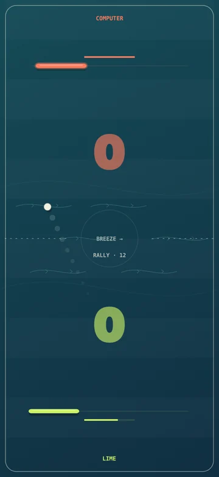
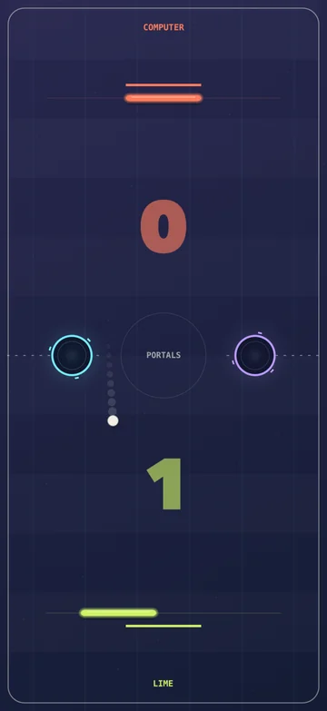
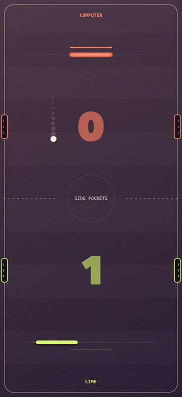
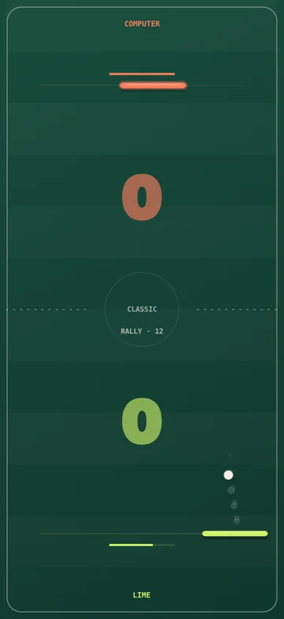
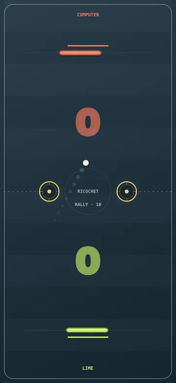
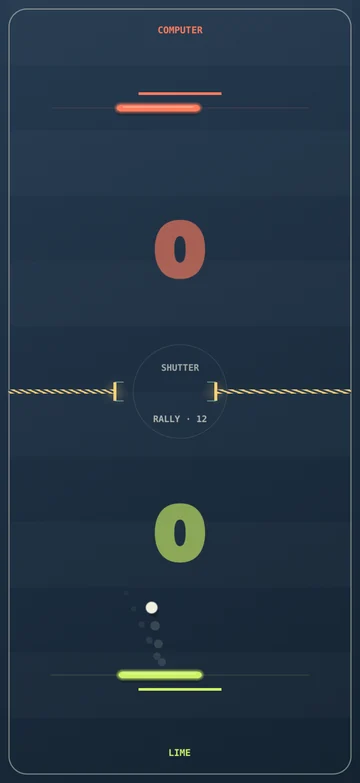

01
Put it between you
Lay your iPhone or iPad flat. Each player gets their own half and a score facing them.
Closed TestFlight beta
Put your iPhone between you. Pick a side. Turn “one more round” into your favourite little ritual.
For iPhone & iPad · iOS / iPadOS 17 or later
A fresh look for every rally
Teal air currents. Amber rebounds. Portals that light up together. Every table has its own look — and its own way to catch you out.
Find your table Captured in the game


01 / Pull up a chair
A break between meetings. A train ride. The sofa after dinner. There’s always room for a quick rivalry.
01
Lay your iPhone or iPad flat. Each player gets their own half and a score facing them.
02
Slide your finger on your half; the raised paddle stays visible ahead of it. Three returns charge a smash — catch the ball near the paddle’s edge to use it.
03
Win a match at seven points, or settle the rivalry in a cup: first to three match wins. Rematches are a tap away.
A charged smash hits harder, but makes your paddle narrower until your next successful return or the end of the point. Pick your moment.
02 / Same rivalry. New rules.
Six distinct courts. Five ways to break your rhythm. Pick a table to see its real playing field and what lights up when you play.

01 / 06
Deep green, a clean court and no obstacles. Find your rhythm, choose an angle and send the ball past your rival.
Watch it reactWall hits give a brief pulse. A charged paddle glows when your smash is ready.
Try this — Aim for the edge. Make the return count.

02 / 06
Amber target bumpers on a graphite court. A straight return can become a surprise rebound in an instant.
Watch it reactThe bumper flashes on impact, with a short burst of sparks.
Try this — Play the bumper, not just the paddle.
03 / 06
A teal court with flowing air currents. The changing crosswind bends the ball’s path — leave room to adjust.
Watch it reactThe streams follow the wind’s direction and become more visible as it strengthens.
Try this — Leave yourself room to adjust.

04 / 06
Striped amber shutters frame a moving gap. Choose your angle and time the shot to send the ball through.
Watch it reactAmber light marks a collision. A mint pulse marks a clean passage.
Try this — Wait for your window.
05 / 06
Cyan and lilac rings on an indigo court. The ball enters one portal and reappears at the other with its direction and speed intact.
Watch it reactBoth ends light up together when the ball travels through.
Try this — Watch the exit as well as the entry.
06 / 06
Dark plum cloth and recessed side pockets in each player’s colour. Score in your rival’s pocket; your own is an own goal.
Watch it reactThe pocket that takes the goal lights up — you can see exactly where it went.
Try this — Know when to take the safe shot.
03 / Your kind of rivalry
The shared table comes first. There’s still a game to play when your usual rival isn’t around.
Two people. One device. No account or internet needed for local play.
Three difficulty levels, from a warm-up to a tougher challenge. Play offline, whenever you like.
Invite a friend through Game Center and play on separate devices. Online mode is in beta and needs internet and Game Center.
For the “best of…” crowd
Arcade Cup changes the table each round: Shutter, Portals, Side pockets, Ricochet, then Breeze. First to three match wins takes the cup — you may never reach round five.
Before the first serve
No. Table Rivals is made for ordinary iPhones and iPads running iOS or iPadOS 17 or later. A bigger screen gives both players more room.
Yes. Local two-player games and computer matches work offline. Playing a friend on another device needs an internet connection and Game Center.
All six tables are open in the current closed beta, with no in-app purchases enabled. Release pricing and paid features have not been finalised.
The ball and paddles stay bright against the darker courts. Short flashes mark impacts; with Reduce Motion enabled in iOS, the game keeps the light feedback and turns off drifting streams, orbit rotation and flying sparks.
A quick rematch, a harder computer opponent, a new table, an Arcade Cup, or beating your best rally. Your rally record stays on your device.
Email us with the subject “Table Rivals beta”. We’ll reply with the available access options. This is a closed TestFlight beta; requesting access does not automatically add you.
Closed TestFlight beta
Bring them to the table. Request access to the closed beta and help shape the next round.
Opens your email app. Access is arranged by email; there’s no public TestFlight link yet.